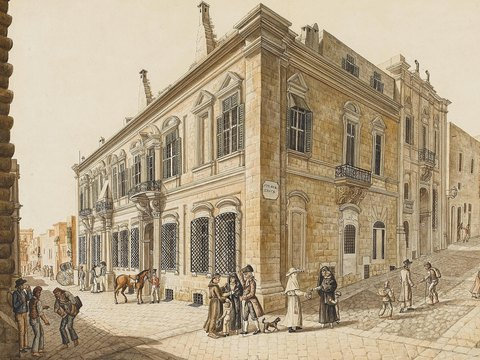
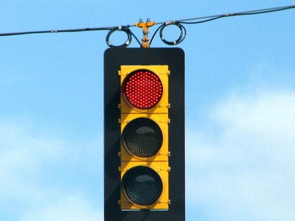
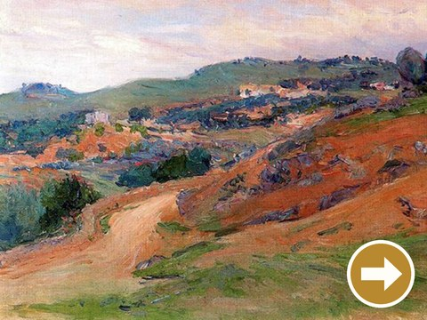
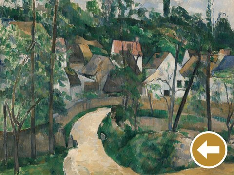
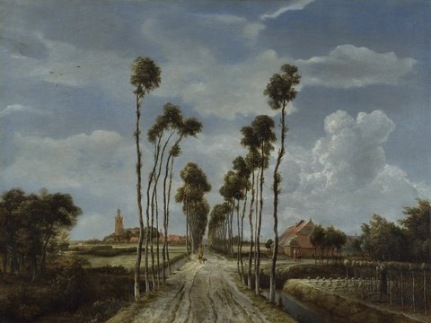
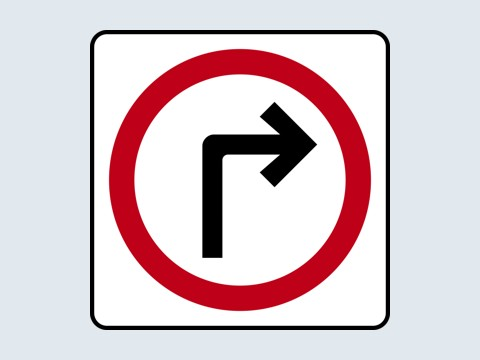
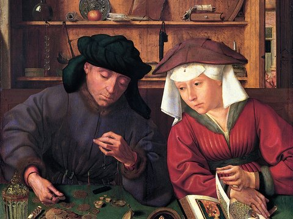

Optima Academy OnlineAn Education Experience Company
Optima Academy OnlineAn Education Experience CompanyDirecciones
Yesterday's places, quick recall
You already know the places. Now imagine you're standing in la plaza and a visitor asks how to reach el mercado. To answer, you need direction words — that's Part 2. First, a quick warm-up.
Listen, then repeat
Click the 🔊 and say each one back. Notice that doblar is a verb (to turn), while the rest are the little words that describe a route.

la esquinathe corner
el semáforothe traffic light
a la derechato the right
a la izquierdato the left
derechostraight ahead- cercanear / close
- lejosfar
- la cuadrathe (city) block

doblarto turn
Careful: derecho = straight ahead, but a la derecha = to the right. They look alike on purpose — listen for the difference.
More than a hundred years after Villalpando, the painter Pedro Gualdi stood beside the cathedral and painted the same square. The tall bell tower belongs to la catedral (the cathedral). Which side is it on?
One more look: what is the long, low building at the far end of the square? (click for a hint)
A whole family of “almost regular” verbs
Here's the pattern for the whole module: a group of everyday verbs are completely regular in tú, él, nosotros, ellos… and irregular in one place only — the yo form. Learn the odd yo form and you've learned the hard part. Listen to each one in a sentence (click 🔊) — every clip starts with Yo…
| Infinitive | yo form | Listen (in a sentence) |
|---|---|---|
| hacer (to do / make) | hago | Yo hago mis tareas en el centro. |
| poner (to put / place) | pongo | Yo pongo el dinero (the money) en el banco. |
| salir (to leave / go out) | salgo | Yo salgo de casa a las ocho. |
| traer (to bring) | traigo | Yo traigo un mapa (a map) de la ciudad. |
| conocer (to know / be familiar with) | conozco | Yo conozco bien (well) la ciudad. |
| ver (to see) | veo | Yo veo el museo en la plaza. |
| dar (to give) | doy | Yo doy un paseo (a stroll) por (through / around) el centro. |
Notice the family resemblance: four of them add a -g- (hago, pongo, salgo, traigo). Tomorrow you'll see the full conjugation and learn how easy the other forms are. For today, just get these seven yo forms into your ear.
Your turn: how would you say "I do / I make" (from hacer)? Type it, then press Check.
Warm up your ear
Before the ear-quiz, remind your brain what these words sound like. Click each 🔊, say it back, and picture its meaning — no reading the English until after you've guessed.
- la esquinathe corner
- derechostraight ahead

el bancothe bank- la plazathe square
Ear-quiz: what did you hear?
Press 🔊 to hear a word (replay as often as you like), then pick its meaning in English. This is the interpretive-listening skill the Day-8 quiz will test — train it now.
Millions of chilangos (as residents of la Ciudad de México call themselves) get around on el metro, one of the busiest subway systems in the world. Each station has its own colorful icon — a grasshopper, a fountain, a cannon — a clever design so that everyone can navigate, whether or not they read. Knowing your directions (a la derecha, derecho, dos cuadras) still matters the moment you climb the stairs back to street level.
You can point the way and you've met the tricky yo. Tomorrow the rest of the verb falls into place — ¡hasta mañana! (See you tomorrow!)